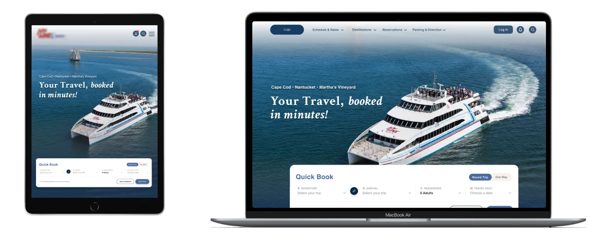
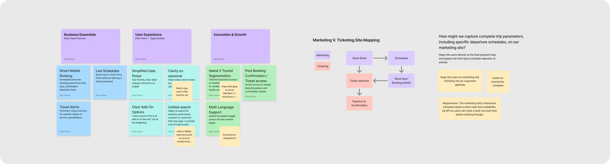
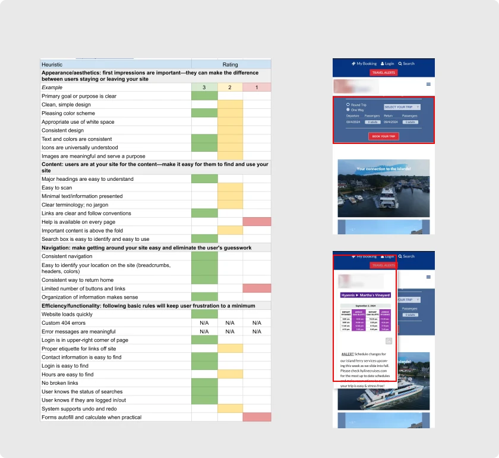
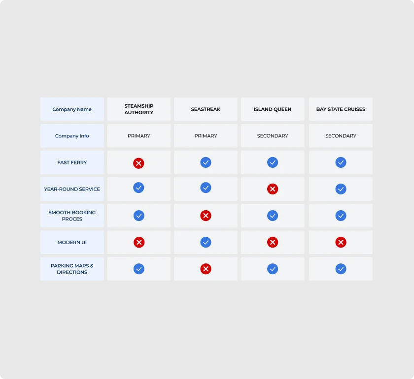
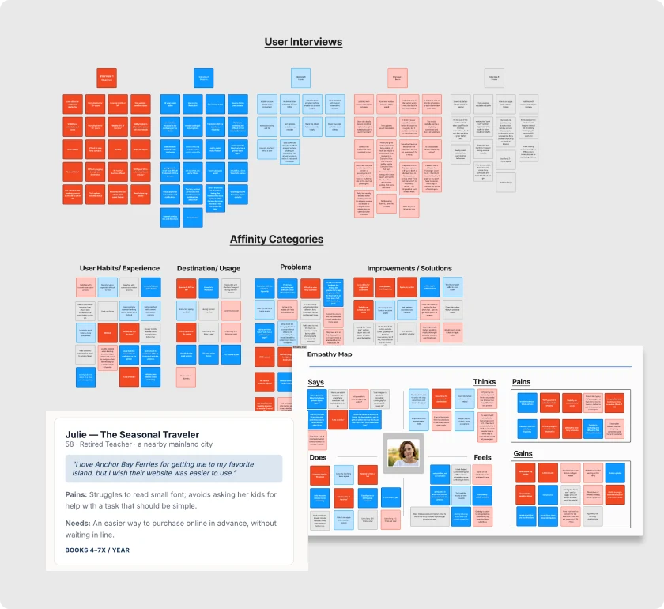
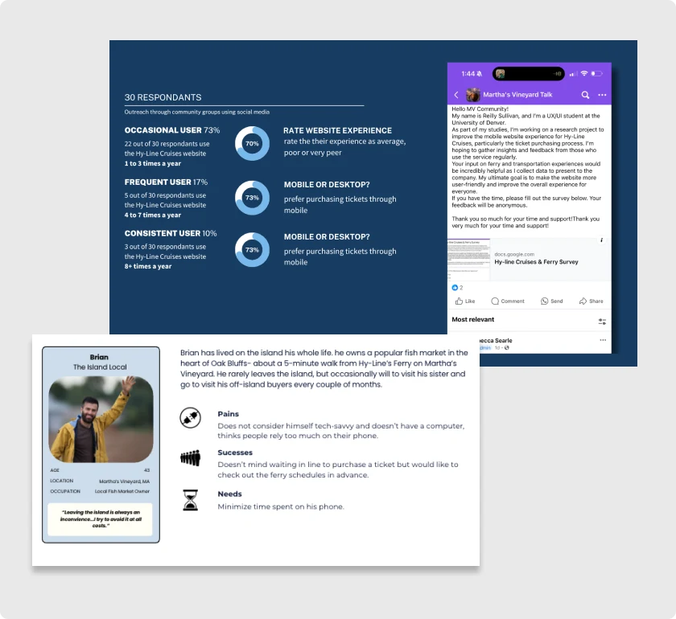
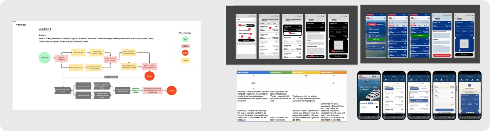
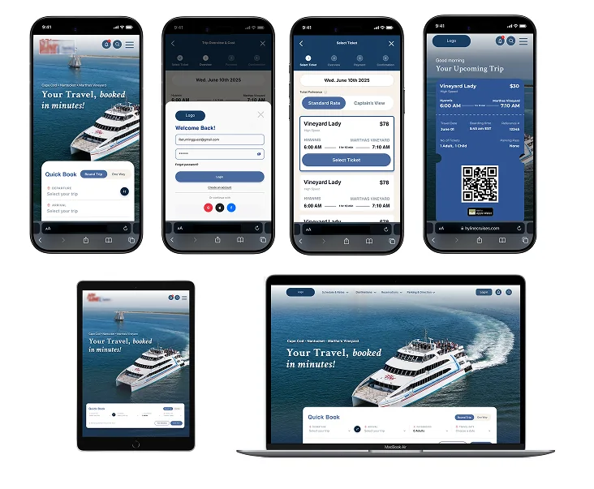

Transportation Website
Mobile Website RedesignA generative research study into why booking a ferry felt harder than it should, and a redesign built directly from what 30 survey respondents, 3 rider interviews, and a heuristic audit surfaced.
UXR methods used: Heuristic Evaluation · Interviews · Survey · Usability Testing

Problem
Riders rely on this service to book trips between a mainland terminal and two nearby islands, but the mobile experience consistently produced friction: too many steps for simple actions, unclear paths through schedules and ticket selection, and no modern convenience like a digital ticket. 70% of surveyed riders rated the current booking experience as average, poor, or very poor — the number this project had to move. The starting question was generative, not evaluative: why does a simple two-sided transaction feel effortful on mobile, and for which riders is it worst? The working hypothesis was that if ticketing efficiency, content clarity, and visual cohesion improved, a more positive experience would follow — and with it, more sales and more loyalty.
Approach
Stakeholder Workshop & Interviews
A workshop and in-depth interviews with stakeholders helped us understand our client's own words: what was valuable about their service, where their assumptions about the product lived, and how to collaboratively frame a research goal.
Early stakeholder interviews uncovered the project's biggest UX constraint — the booking flow depended on an unmodifiable third-party reservation system. Instead of redesigning a flow we couldn't control, we looked for ways to improve the experience around it. We proposed capturing trip details (departure time, passengers, and travel date) directly on the marketing site, then passing that information into the reservation system through deep linking. This kept users in a streamlined, branded experience for as long as possible, turning the legacy platform into little more than the final payment step.

From there, four more methods, each chosen for what the workshop couldn't tell us on its own: a heuristic evaluation to catch objective usability breaks fast, a competitive analysis to calibrate against category norms, moderated rider interviews to understand the sequence and emotion behind a booking, and a 30-respondent survey distributed through island community groups to check whether interview findings held at scale.
"Describe how you use the service. Walk us through your typical booking process, start to finish. When you hit friction, how do you typically handle it?"— from the interview guide
All planned interviews were completed, split across the two-person research team — I ran 3 and my co-designer ran the remaining 2. One real limitation: every interview was with a seasonal traveler, while the survey skewed the opposite way, at over 60% year-round island residents. The two methods ended up covering different populations rather than the same one, which means the island-resident persona rests on survey data alone, with no interview quotes behind it.
Process
Heuristics Evaluation
Two categories of breakdown stood out. Way-finding — ticket office hours, ferry schedules, parking directions, and amenities were all difficult to locate from the primary flow. Forms & buttons — accessibility issues, unclear touch selections, and a lack of breadcrumbs left riders unsure where they were mid-booking, or how to get back.

Competitive Analysis
Benchmarked against four regional competitors on fast-ferry service, year-round schedules, ease of booking, and modern UI. The finding that mattered most: modern UI was a gap almost nobody in the whole category had closed — not just this client. A low bar to clear, and an easy one to differentiate on.

User Interviews
All interviews were with seasonal travelers, not year-round island residents — worth flagging up front, since it shapes how far the qualitative color below can generalize. Three voices anchor the study:
"They have a lot of information which is very nice, but it's not user friendly."
"I can imagine it would be incredibly challenging for someone 45+ years old."
"I had to print the ticket — who has a printer these days?"

Survey & Segmentation
The survey pulled a different population than the interviews did — over 60% of the 30 respondents were year-round island residents, the group our interview sample hadn't reached at all. Segmenting by trip frequency: 73% occasional riders (1–3 trips/year), 17% frequent (4–7), and 10% consistent (8+). The island-local persona is built from this survey data alone, with no interview quotes behind it — a gap worth naming rather than papering over.

Impact
Stakeholder interviews surfaced a real tension worth naming: riders came to the site to purchase tickets and view the schedule. The business wanted the same visit to also sell tickets, segment stakeholder vs. tourist content, and offer translation. Neither list was wrong — they just weren't the same list, and the redesign had to serve both without letting business goals crowd out what riders actually came to do.
Stakeholders were also explicit that the third-party reservation engine was out of scope, which narrowed the question to: within just the marketing site, what has the highest impact for the lowest effort? We plotted every candidate feature on customer lifetime value against acquisition cost.
Scoped in: optimized mobile UI, clear pricing and schedule access on the homepage, and digital-wallet ticketing — a direct answer to "who has a printer these days?" The workshop's core proposal became the backbone of the flow itself: capture trip details on the marketing site, then pass them into the reservation system via deep link, keeping riders in a branded experience until the last possible step. At the hi-fi stage this became concrete — a viable transaction icon (the stakeholders' own ask), breadcrumb navigation after respondents reported losing their place mid-checkout, and cost visibility at two points in the flow instead of one.
Scoped out, deliberately: a native app, loyalty program, and full accessibility overhaul all scored well on value but were disproportionate to a two-person team's timeline — so they became the next-steps roadmap instead of scope creep.
Validation
Low-fidelity testing surfaced two rounds of direct feedback — "modify the color palette" and "less clunky, more sleek" — which we iterated on before the final round of usability testing.

93%
of 30 usability-test participants found the redesigned flow more efficient than the original.
20%
reduction (~10 sec) in the time to locate a ferry meeting specific price, time, and route criteria.
Resulting Design

Reflection
This project reinforced that effective UX begins long before wireframes — the most impactful decision in the whole redesign came from a stakeholder workshop, not a usability test: discovering the reservation system couldn't be touched, and proposing deep-linking as the way around it. That single finding shaped everything downstream, from what we scoped to what became next steps.
Given the project's scope, our two-person team focused on the highest-impact problems first. With more time — or another researcher dedicated to iterative prototyping — we'd have explored more design directions and pushed usability testing further. What I'm most proud of is that every recommendation traces back to a real finding or a stated technical constraint, not a hunch. Balancing rider needs, business goals, and technical feasibility is what I believe produces the strongest outcomes.
Next Steps
Strengthen Long-Term Loyalty
The redesign focused on booking, but research suggested ferry choice is driven more by habit and schedule than brand preference. A loyalty program — rewards for repeat travelers, saved payment and passenger info, personalized offers — could shift the relationship from transactional to long-term.
Expand into a Dedicated Mobile App
A companion app would centralize tickets, traveler profiles, and payment for frequent riders — digital ticket storage, real-time trip alerts, and wallet integration reducing friction across the whole journey, not just at booking.
Keep Validating Iteratively
As booking behavior evolves, ongoing usability testing — tracking task completion, conversion, and satisfaction over time — should prioritize future improvements based on real behavior rather than assumptions.